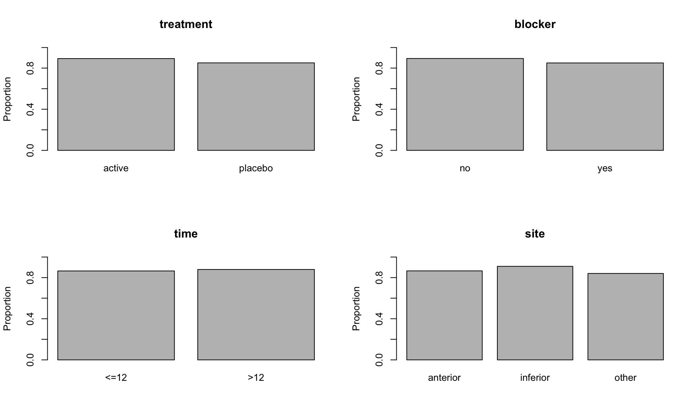

heart <-read.csv("../datasets/heart.csv") # Change the path, if neededhead(heart)
X n_patients n_survived treatment blocker time site
1 1 59 53 active yes <=12 anterior
2 2 49 42 placebo yes <=12 anterior
3 3 227 207 active no <=12 anterior
4 4 262 220 placebo no <=12 anterior
5 5 58 50 active yes >12 anterior
6 6 56 44 placebo yes >12 anterior
This dataset contains the results of a clinical trial to assess the effectiveness of a thrombolytic (clot-busting) treatment for patients who have suffered an acute myocardial infarction (heart attack).
The explanatory variables are
The site of infarction: anterior, inferior or other.
The time between infarction and treatment: \(\le 12\) or \(>12\) hours
Whether the patient was already taking Beta-blocker medication prior to the infarction, blocker: yes or no
The treatment the patient was given: active or placebo.
For each combination of these categorical variables, the dataset gives the total number of patients (n_patients), and the number who survived for for 35 days (n_survived).
Make plots of the proportion of patients who survived for 35 days against each of the explanatory variables. The resulting plots should look like the following

GLMs with factors
We abbreviate site to \(S\), time to \(T\), blocker to \(B\) and treatment to \(R\) in our mathematical descriptions of various possible models for this data.
We refer to categorical explanatory variables as factors, and factorial models can include main effects and interactions. For example, a logistic regression model which allows n_survived to depend on site, treatment and an interaction between these two factors is \[
Y_i|n_i, p_i\sim\;{\rm Binomial}(n_i,p_i),\ \ \
\log\left({{p_i}\over{1-p_i}}\right)=\alpha+\beta_S(s_i)
+\beta_{R}(r_i)+\gamma_{S,R}(s_i,r_i), \ \ i=1,\cdots ,24.
\]
where \(s_i\) is the level of site, and \(r_i\) is the level of treatment for the \(i\)-th observation; \(p_i\) is the probability of surviving at least 35 days and \(n_i\) is the number of patients in the \(i\)-th group.
Here \(\beta_{S}\), the main effect of site, takes different values depending on the level of site, so in principle \(\beta_{S}\) takes three values, \(\beta_{S}(\text{anterior})\), \(\beta_{S}(\text{inferior})\) and \(\beta_{S}(\text{other})\). Similarly, \(\beta_{R}\) depends on the level of treatment (two values) and \(\gamma_{S,R}\) depends jointly on the levels of site and treatment (six values).
We could fit this model in R using glm.
# Fit a logistic regression of proportion of patients who survive on site, treatment, and an interaction between site and treatment.mod_SR <-glm(n_survived / n_patients ~ site + treatment + site:treatment, family = binomial, weights = n_patients, data = heart)summary(mod_SR)
Call:
glm(formula = n_survived/n_patients ~ site + treatment + site:treatment,
family = binomial, data = heart, weights = n_patients)
Coefficients:
Estimate Std. Error z value Pr(>|z|)
(Intercept) 2.16860 0.13300 16.306 <2e-16 ***
siteinferior 0.32009 0.20567 1.556 0.1196
siteother -0.16401 0.24765 -0.662 0.5078
treatmentplacebo -0.41003 0.17255 -2.376 0.0175 *
siteinferior:treatmentplacebo 0.43365 0.28307 1.532 0.1255
siteother:treatmentplacebo 0.02393 0.31725 0.075 0.9399
---
Signif. codes: 0 '***' 0.001 '**' 0.01 '*' 0.05 '.' 0.1 ' ' 1
(Dispersion parameter for binomial family taken to be 1)
Null deviance: 50.921 on 23 degrees of freedom
Residual deviance: 19.630 on 18 degrees of freedom
AIC: 127.63
Number of Fisher Scoring iterations: 4
The model is overparameterised (if we examined the \(\mathbf{X}\) matrix, there would be obvious linear dependencies among the columns). By default, R constrains any main effect to be equal to \(0\) at the first level of a factor. If the factor levels are not labelled numerically, R interprets the “first” level to be the first in alphabetical order. In this case, the first level of site is “anterior”, and the first level of treatment is “active”, so the intercept in mod_SR represents the linear predictor for patients with an infarction in the anterior site, who are given the active treatment.
When specifying models with interactions between factors, one rule which must be followed is the principle of marginality, which states that whenever an interaction is present in a model, all marginal main effects and interactions must also be present. For example, if we include the site:treatment interaction, then the main effects of site and treatment must also be in the model, as in mod_SR. A useful shorthand permitted by R is site * treatment, which represents the interaction site:treatment together with all its marginal terms.
# Alternatively, specify the main and interaction effects in one term (`site * treatment`)mod_SR_2 <-glm(n_survived / n_patients ~ site * treatment, family = binomial, weights = n_patients, data = heart)
Check that mod_SR and mod_SR_2 are equivalent.
# The same terms are included in both cases.summary(mod_SR)
Call:
glm(formula = n_survived/n_patients ~ site + treatment + site:treatment,
family = binomial, data = heart, weights = n_patients)
Coefficients:
Estimate Std. Error z value Pr(>|z|)
(Intercept) 2.16860 0.13300 16.306 <2e-16 ***
siteinferior 0.32009 0.20567 1.556 0.1196
siteother -0.16401 0.24765 -0.662 0.5078
treatmentplacebo -0.41003 0.17255 -2.376 0.0175 *
siteinferior:treatmentplacebo 0.43365 0.28307 1.532 0.1255
siteother:treatmentplacebo 0.02393 0.31725 0.075 0.9399
---
Signif. codes: 0 '***' 0.001 '**' 0.01 '*' 0.05 '.' 0.1 ' ' 1
(Dispersion parameter for binomial family taken to be 1)
Null deviance: 50.921 on 23 degrees of freedom
Residual deviance: 19.630 on 18 degrees of freedom
AIC: 127.63
Number of Fisher Scoring iterations: 4
summary(mod_SR_2)
Call:
glm(formula = n_survived/n_patients ~ site * treatment, family = binomial,
data = heart, weights = n_patients)
Coefficients:
Estimate Std. Error z value Pr(>|z|)
(Intercept) 2.16860 0.13300 16.306 <2e-16 ***
siteinferior 0.32009 0.20567 1.556 0.1196
siteother -0.16401 0.24765 -0.662 0.5078
treatmentplacebo -0.41003 0.17255 -2.376 0.0175 *
siteinferior:treatmentplacebo 0.43365 0.28307 1.532 0.1255
siteother:treatmentplacebo 0.02393 0.31725 0.075 0.9399
---
Signif. codes: 0 '***' 0.001 '**' 0.01 '*' 0.05 '.' 0.1 ' ' 1
(Dispersion parameter for binomial family taken to be 1)
Null deviance: 50.921 on 23 degrees of freedom
Residual deviance: 19.630 on 18 degrees of freedom
AIC: 127.63
Number of Fisher Scoring iterations: 4
The concept of interaction can be extended when we have three or more factors. For example, a three-factor interaction allows the response to depend jointly on three factors. For example, we could fit a three-factor interaction between site, blocker, and treatment.
# Fit a three-factor interaction between `site`, `blocker`, and `treatment`.mod_SBR <-glm(n_survived / n_patients ~ site * blocker * treatment, family = binomial, weights = n_patients, data = heart)summary(mod_SBR)
Call:
glm(formula = n_survived/n_patients ~ site * blocker * treatment,
family = binomial, data = heart, weights = n_patients)
Coefficients:
Estimate Std. Error z value Pr(>|z|)
(Intercept) 2.2130 0.1505 14.707 <2e-16
siteinferior 0.3975 0.2349 1.693 0.0905
siteother -0.2103 0.2725 -0.772 0.4403
blockeryes -0.2173 0.3221 -0.675 0.5000
treatmentplacebo -0.4022 0.1938 -2.075 0.0380
siteinferior:blockeryes -0.3967 0.4894 -0.810 0.4177
siteother:blockeryes 0.2295 0.6623 0.346 0.7290
siteinferior:treatmentplacebo 0.3728 0.3204 1.163 0.2447
siteother:treatmentplacebo 0.1858 0.3561 0.522 0.6018
blockeryes:treatmentplacebo -0.0836 0.4277 -0.195 0.8450
siteinferior:blockeryes:treatmentplacebo 0.3259 0.6889 0.473 0.6362
siteother:blockeryes:treatmentplacebo -0.6690 0.8121 -0.824 0.4101
(Intercept) ***
siteinferior .
siteother
blockeryes
treatmentplacebo *
siteinferior:blockeryes
siteother:blockeryes
siteinferior:treatmentplacebo
siteother:treatmentplacebo
blockeryes:treatmentplacebo
siteinferior:blockeryes:treatmentplacebo
siteother:blockeryes:treatmentplacebo
---
Signif. codes: 0 '***' 0.001 '**' 0.01 '*' 0.05 '.' 0.1 ' ' 1
(Dispersion parameter for binomial family taken to be 1)
Null deviance: 50.921 on 23 degrees of freedom
Residual deviance: 11.078 on 12 degrees of freedom
AIC: 131.08
Number of Fisher Scoring iterations: 4
By default, R constrains any interaction to be equal to \(0\) for all combinations where any of the factors are at their first level. Hence, the main effect site involves \(3 - 1 = 2\) free coefficients, the interaction site:treatment involves \((3-1)(2-1) = 2\) free coefficients, site:blocker:treatment involves \((3-1)(2-1)(2-1) = 2\) free coefficients, and so on. By the principle of marginality, if we include the three-factor interaction site:blocker:treatment, the main effects site, blocker and treatment, and the interactions site:blocker, site:treatment and blocker:treatment must all be present. Specifying the model with site * blocker * treatment ensures that all of these terms are included.
Model selection
There are many possible models that we could consider, with many possible interaction terms. Let us start with a model including a main effect for each explanatory variable, but no interaction terms.
# Fit a logistic regression with all main effects, but no interactions:mod_S_T_B_R <-glm(n_survived / n_patients ~ site + time + blocker + treatment, family = binomial, weights = n_patients, data = heart)summary(mod_S_T_B_R)
Call:
glm(formula = n_survived/n_patients ~ site + time + blocker +
treatment, family = binomial, data = heart, weights = n_patients)
Coefficients:
Estimate Std. Error z value Pr(>|z|)
(Intercept) 2.0814 0.1288 16.161 < 2e-16 ***
siteinferior 0.5542 0.1408 3.936 8.28e-05 ***
siteother -0.1544 0.1550 -0.996 0.3191
time>12 0.1676 0.1200 1.396 0.1627
blockeryes -0.3768 0.1466 -2.571 0.0101 *
treatmentplacebo -0.2834 0.1213 -2.336 0.0195 *
---
Signif. codes: 0 '***' 0.001 '**' 0.01 '*' 0.05 '.' 0.1 ' ' 1
(Dispersion parameter for binomial family taken to be 1)
Null deviance: 50.921 on 23 degrees of freedom
Residual deviance: 13.906 on 18 degrees of freedom
AIC: 121.91
Number of Fisher Scoring iterations: 4
Starting at this model, conduct hypothesis tests to see whether you could drop any of the main effects. For the remaining main effects, try adding interactions between pairs of variables, and conduct hypothesis test of whether or not each of these possible two-factor interactions is needed. If you include more than one two-factor interaction, check to see if any three-factor interactions are required.
# Hypothesis test of each main effect.anova(mod_S_T_B_R, test ="LRT")
# We should include `site`, `blocker` and `treatment`, but don't need to include `time`mod_S_B_R <-glm(n_survived / n_patients ~ site + blocker + treatment, family = binomial, weights = n_patients, data = heart)anova(mod_S_B_R, test ="LRT")
# We should keep all of the remaining main effects.# We should now consider potential interactions between the main effects.# Possible two-factor interactions: `site * blocker`, `site * treatment`, `blocker * treatment`.mod_SB_R <-glm(n_survived / n_patients ~ site * blocker + treatment, family = binomial, weights = n_patients, data = heart)anova(mod_S_B_R, mod_SB_R, test ="LRT")
Analysis of Deviance Table
Model 1: n_survived/n_patients ~ site + blocker + treatment
Model 2: n_survived/n_patients ~ site * blocker + treatment
Resid. Df Resid. Dev Df Deviance Pr(>Chi)
1 19 15.855
2 17 15.180 2 0.67493 0.7136
# Interaction `site:blocker` not needed.mod_SR_B <-glm(n_survived / n_patients ~ site * treatment + blocker, family = binomial, weights = n_patients, data = heart)anova(mod_S_B_R, mod_SR_B, test ="LRT")
Analysis of Deviance Table
Model 1: n_survived/n_patients ~ site + blocker + treatment
Model 2: n_survived/n_patients ~ site * treatment + blocker
Resid. Df Resid. Dev Df Deviance Pr(>Chi)
1 19 15.855
2 17 13.192 2 2.663 0.2641
# Interaction `site:treatment` not needed.mod_S_BR <-glm(n_survived / n_patients ~ site + blocker * treatment, family = binomial, weights = n_patients, data = heart)anova(mod_S_B_R, mod_S_BR, test ="LRT")
Analysis of Deviance Table
Model 1: n_survived/n_patients ~ site + blocker + treatment
Model 2: n_survived/n_patients ~ site + blocker * treatment
Resid. Df Resid. Dev Df Deviance Pr(>Chi)
1 19 15.855
2 18 15.691 1 0.16463 0.6849
# Interaction `blocker:treatment` not needed.# So we prefer `mod_S_B_R` as our final model.
At the end of this process, using a \(5\%\) significance level, you should find that the preferred model is \[
Y_i|n_i, p_i\sim\;{\rm Binomial}(n_i,p_i),\ \ \
\log\left({{p_i}\over{1-p_i}}\right)=\alpha+\beta_S(s_i)+\beta_B(b_i)
+\beta_{R}(r_i), \ \ i=1,\cdots ,24.
\] where \(s_i\) is the level of site, \(b_i\) is the level of blocker, and \(r_i\) is the level of treatment for the \(i\)-th observation.
Call:
glm(formula = n_survived/n_patients ~ treatment + blocker + site,
family = binomial, data = heart, weights = n_patients)
Coefficients:
Estimate Std. Error z value Pr(>|z|)
(Intercept) 2.1677 0.1140 19.020 < 2e-16 ***
treatmentplacebo -0.2828 0.1212 -2.332 0.01968 *
blockeryes -0.3785 0.1465 -2.584 0.00977 **
siteinferior 0.5505 0.1407 3.911 9.17e-05 ***
siteother -0.1522 0.1549 -0.983 0.32573
---
Signif. codes: 0 '***' 0.001 '**' 0.01 '*' 0.05 '.' 0.1 ' ' 1
(Dispersion parameter for binomial family taken to be 1)
Null deviance: 50.921 on 23 degrees of freedom
Residual deviance: 15.855 on 19 degrees of freedom
AIC: 121.86
Number of Fisher Scoring iterations: 4
An alternative way to try to find the best model is to start with the model including all possible interactions between all the explanatory variables.
# Fit the saturated model with all interaction terms.mod_STBR <-glm(n_survived / n_patients ~ site * time * blocker * treatment, family = binomial, weights = n_patients, data = heart)
You can then perform likelihood ratio tests of whether you can drop each of the terms in the model.
# Test whether each term is needed in the model.anova(mod_STBR, test ="LRT")
Remember that the principle of marginality says that you should only drop a term if you have already dropped all higher-order interactions involving that term. What is your preferred model on the basis of this? Check that you understand the hypothesis tests corresponding to each row of the table given by the anova call. For example, what is the hypothesis test being conducted at the last row of the table (site:time:blocker:treatment)? What about at the sixth row (site:time)?
The scaled deviance (called “Residual deviance” in the output of summary(mod_final) above) provides one check of the model fit. In this case the scaled deviance is 15.86, which is less than \(30.14\)\((\)the \(95\%\) point of \(\chi^2_{19})\) so the scaled deviance does not provide any evidence of poor model fit.
Prediction and interpretation
Consider a patient who had an anterior infarction and was not previously taking Beta-blockers. What is your estimate of the probability they will survive for 35 days if they are given the active treatment? What is your estimate of this probability if they are given the placebo? Find confidence intervals for both probabilities.
# Make predictions for a patient with anterior infarction, no beta blockers.newdata_active <-data.frame(site ="anterior", blocker ="no", treatment ="active")p_hat_active <-predict(mod_final, newdata = newdata_active, type ="response")# Estimated probability of survival given active treatment is ~90%p_hat_active
1
0.897314
newdata_placebo <-data.frame(site ="anterior", blocker ="no", treatment ="placebo")p_hat_placebo <-predict(mod_final, newdata = newdata_placebo, type ="response")# Estimated probability of survival given placebo treatment is ~87%p_hat_placebo
1
0.8681775
# Find a confidence interval for probability of survival given active treatment.pred_eta_active <-predict(mod_final, newdata = newdata_active, se.fit =TRUE)CI_eta_active <-c(pred_eta_active$fit -qnorm(0.975) * pred_eta_active$se.fit, pred_eta_active$fit +qnorm(0.975) * pred_eta_active$se.fit)CI_p_active <-exp(CI_eta_active) / (1+exp(CI_eta_active))CI_p_active
1 1
0.8748293 0.9161468
# Find a confidence interval for probability of survival given placebo treatment.pred_eta_placebo <-predict(mod_final, newdata = newdata_placebo, se.fit =TRUE)CI_eta_placebo <-c(pred_eta_placebo$fit -qnorm(0.975) * pred_eta_placebo$se.fit, pred_eta_placebo$fit +qnorm(0.975) * pred_eta_placebo$se.fit)CI_p_placebo <-exp(CI_eta_placebo) / (1+exp(CI_eta_placebo))CI_p_placebo
1 1
0.8429954 0.8898483
Qualitatively this model suggests that probability of 35 day survival is enhanced by the thrombotic treatment \((\text{logit}(p)\), and therefore \(p\), is significantly lower for the placebo\()\). As we see from the estimated probabilities, while this treatment effect is significant, the size of the change in probability of survival is fairly small. We also see that probability of survival is significantly higher for those whose site of infarction is “inferior”. This is the most pronounced effect. There is no real significant difference between the other sites. Patients who were on prior beta blocker medication also have a lower probability of survival.